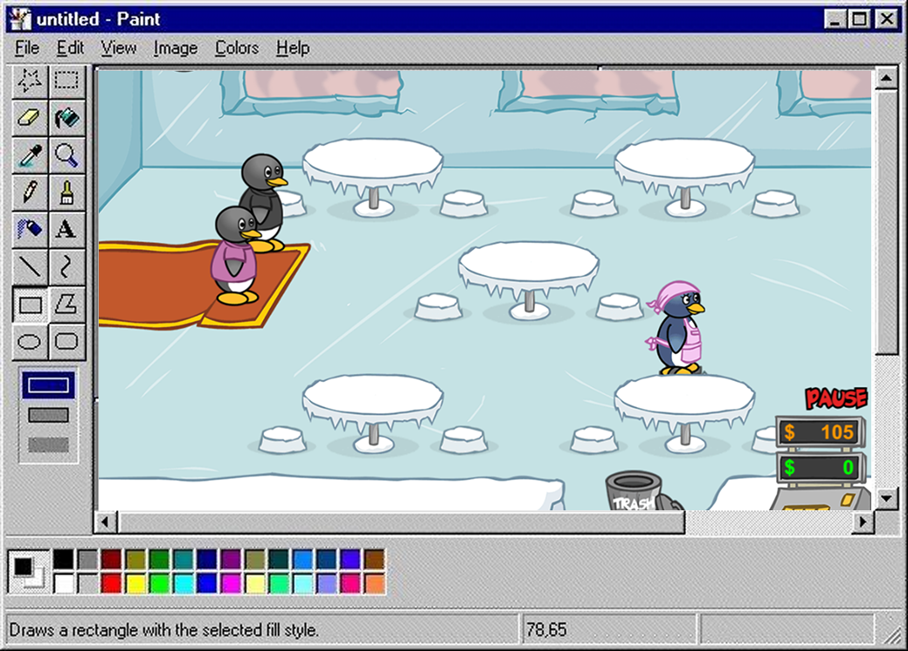
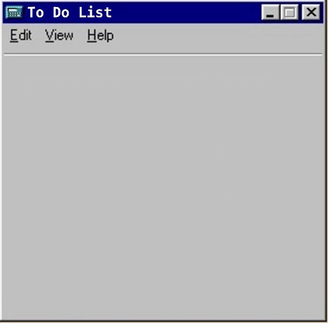
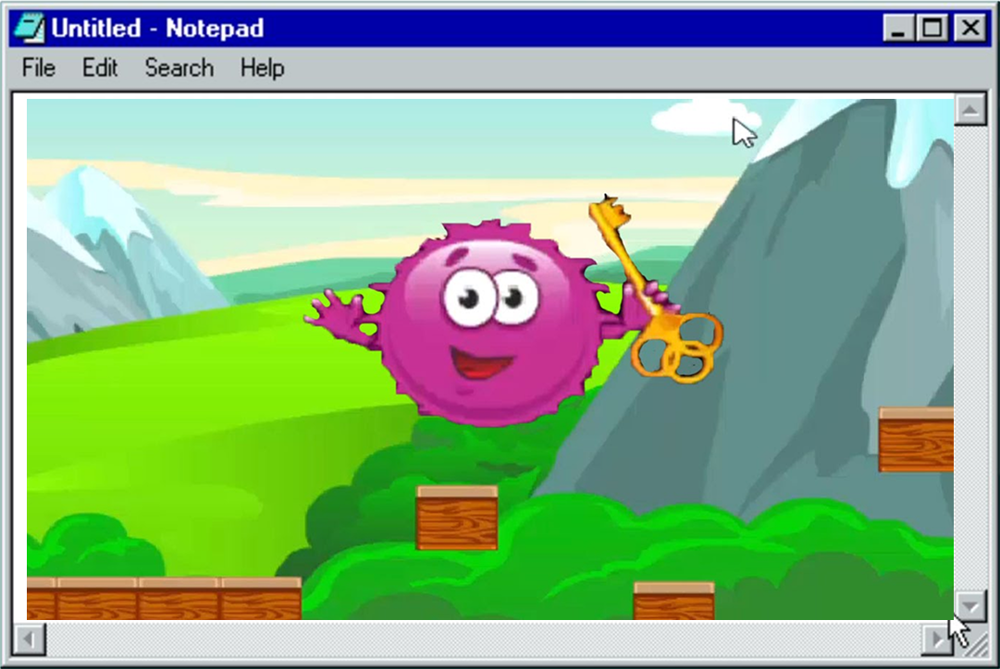
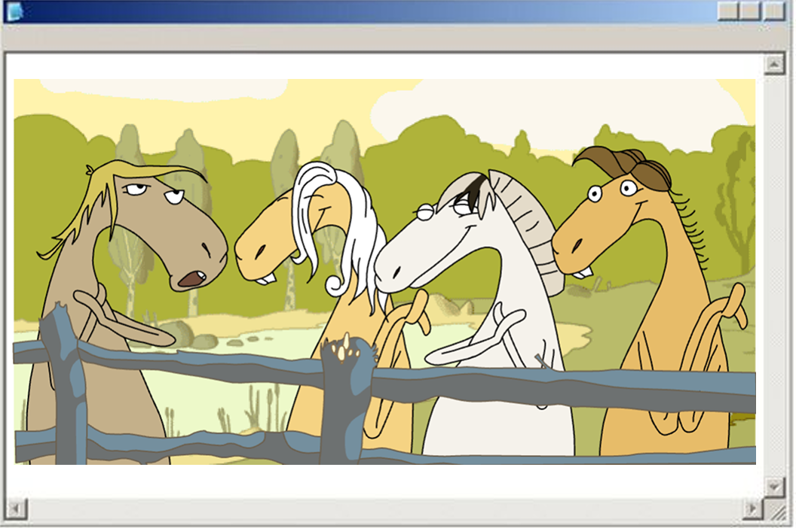
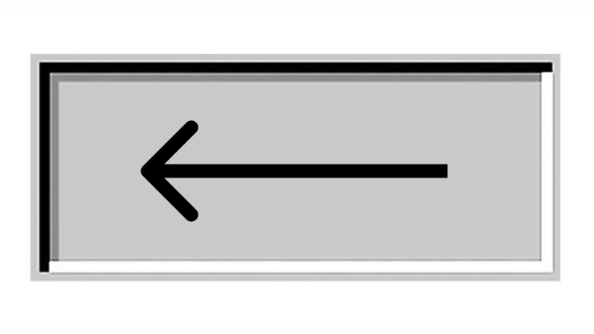

Лот номер 1
Игра «Пингвин официант». Опять что-то связанное с общепитом. Из плюсов: медитативная музыка, которая отпустит вас из этой игры только через пару часов. Также еда выглядит вкусно. Благо игра еще живая, так что вот ссылочка.

Продолжаем ностальгировать вместе со мной. Также напоминаю, ради чего вы здесь ↓

//////////////////////////////////////////
Игра «Пингвин официант». Опять что-то связанное с общепитом. Из плюсов: медитативная музыка, которая отпустит вас из этой игры только через пару часов. Также еда выглядит вкусно. Благо игра еще живая, так что вот ссылочка.

//////////////////////////////////////////
Шарик пушистик. Какой-то розовый мячик прыгает по лесу и размножается. Очень странная штука, но играла я в нее часто. Тык.

//////////////////////////////////////////
И последнее, достойное вашего внимания! Поющие лощади Суть игры заключается в том, что они просто битуют, каждый в своем тембре. Из интересных фактов: сформированная мной мелодия долгое время стояла у папы на звонке. Я устала ставить ссылки, так что загуглите.

//////////////////////////////////////////
А вот и видео ↓
